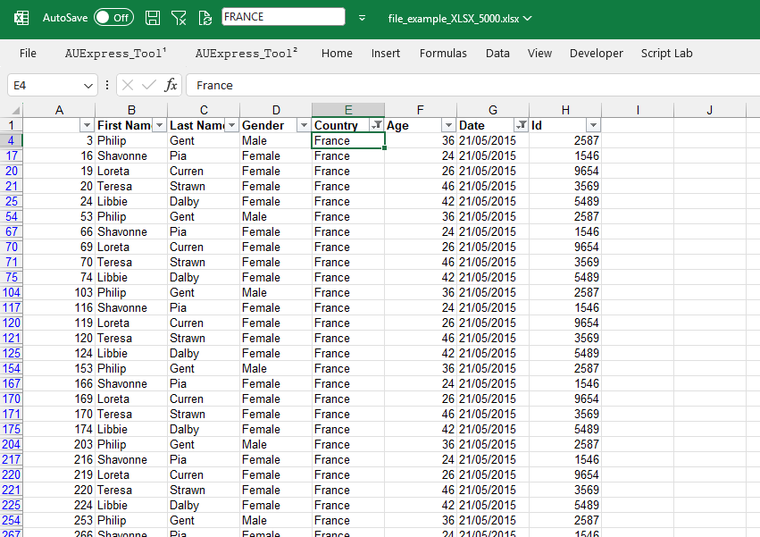
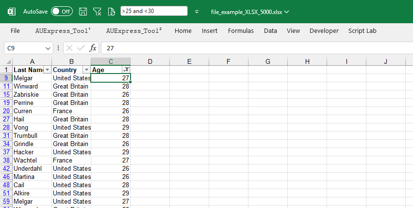

Điểm khác biệt của tính năng này là quá trình lọc không phụ thuộc phạm vi dữ liệu hoặc kiểu phạm vi.
Có thể tiến hành lọc trên mọi files, mọi sheet, mọi vị trí không cần thiết lập miễn là có bộ lọc được áp dụng trên vùng chọn.
VD1: lọc một giá trị đơn: FRANCE trên cột E.
Để lọc nhiều giá trị đồng thời sử dụng wildcard ("*") hoặc "," làm dấu phân tách.

VD2: lọc cột B theo 2 giá trị France và Great Britain.
Để lọc theo nhiều điều kiện, hãy sử dụng các toán tử so sánh và từ khóa And/Or vd: (">25 and <30") hoặc ("<25 or >30").
VD3: lọc tuổi trên cột C từ 26 đến 29.
1. Bật chế độ lọc trước khi lọc (nhận biết bằng mũi tên lọc).
2. Chọn ô trong phạm vi cột cần lọc.
3. Gõ [Enter] để xác nhận từ khóa lọc.
Related function
DATETOWORDS Hàm đọc ngày thành chữ (phiên bản tiếng việt).
CHANGE CASE (feature) Tính năng thay đổi kiểu chữ hoa, chữ thường.
Return to Home